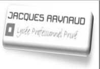
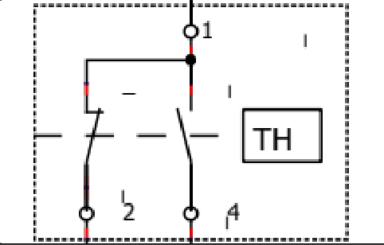
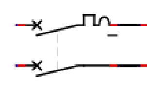
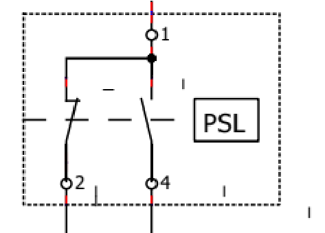
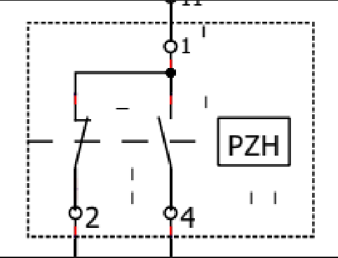
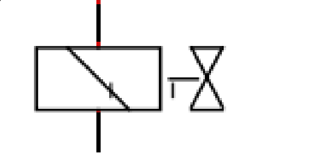
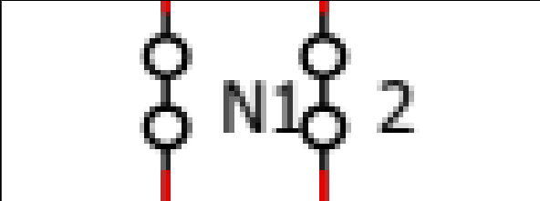
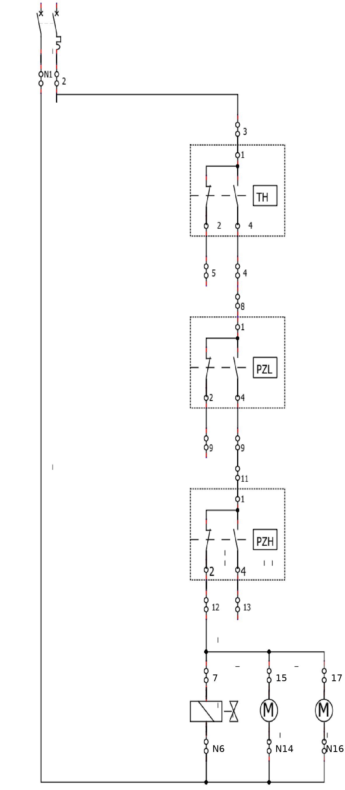
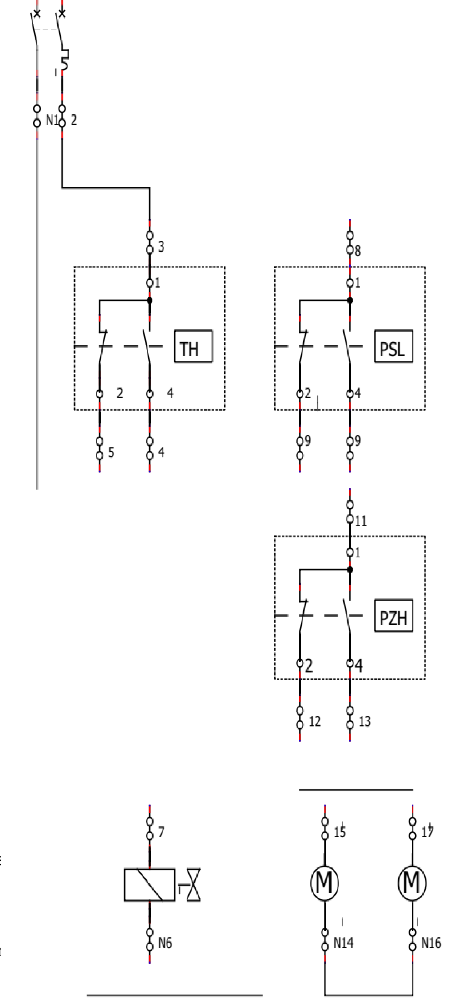

|

|
SÉQUENCE N° |
S11 — carte de progression 2A, semaine 4 |
| ACTIVITÉ N° |
TP n° 2 — ordre S11-02 · poste E2 électrotechnique |
| SÉANCE N° |
Séance 02 · 2CAP26-S39-02 · semaine 39, lundi 21/09/2026 |
| NIVEAU : CAP IFCA 2A |
NOM : |
NOTE :
/ 20 |
| DATE : | PRÉNOM : |
| FICHE D'ACTIVITÉ ÉLÈVE |
| Nature de la séance : TP ☒ / TD ☐ / DS ☐ |
Temps prévisionnel : 4 h 00 |
| Mise en situation : ordre S11-02 — afin de mettre en
service une nouvelle chambre froide, vous devez réaliser le bornier de câblage de la chambre. |
| Objectif : à la fin de l'activité, l'élève sera
capable de câbler un bornier et de comprendre le fonctionnement d'une installation en
pump-down. |
| SUIVI ET ÉVALUATION DES COMPÉTENCES | NA | EC | M | PM |
|---|
| C3.6 — câbler, repérer, connecter les liaisons électriques et électroniques |
☐ | ☐ | ☐ | ☐ |
| C3.7 — contrôler la mise en œuvre des équipements électriques et fluidiques |
☐ | ☐ | ☐ | ☐ |
| Savoir-être — régime hors tension, poste monté et rangé |
☐ | ☐ | ☐ | ☐ |
| ON VOUS DONNE |
ON EXIGE |
➢ Un poste de travail propre et en sécurité
➢ Ce document et la documentation technique
➢ Un bornier sur rail DIN et un disjoncteur différentiel |
➢ Un travail propre et appliqué
➢ Le respect du code des couleurs
➢ Aucune mise sous tension sans le professeur |
| VOUS DEVEZ (travail à réaliser) |
|---|
| 0 | Préparer mon poste à l'armoire | 20 min |
5 | Tracer les fils, faire viser | 20 min |
| 1 | Lire et analyser les documents | 10 min |
6 | Matériel, poser bornier et disjoncteur | 20 min |
| 2 | Découvrir avec les animations | 20 min |
7 | Réaliser le câblage | 45 min |
| 3 | Identifier les éléments du schéma | 15 min |
8 | Contrôler, appeler le professeur | 15 min |
| 4 | Compléter le schéma du pump-down | 15 min |
9 | Compte rendu, démonter, ranger | 35 min |
LP Privé Jacques Raynaud — Campus ÉQUATIO1
Le pump-down le plus simple du mondeCAP IFCA
0 / Préparer mon poste. Rien n'est prêt d'avance : je rassemble mon matériel à
l'armoire électrique, je trie, j'installe.
| JE PRENDS À L'ARMOIRE | JE COCHE QUAND C'EST À MON POSTE |
|---|
| Un bornier sur rail DIN · un disjoncteur différentiel 30 mA / C6 · fils H07VK rouge,
bleu, vert-jaune · embouts · pince à dénuder, pince à sertir, tournevis isolés · stylos bleu,
rouge et vert |
☐ Bornier et rail
☐ Disjoncteur
☐ Fils des trois couleurs
☐ Embouts et pinces
☐ Stylos de couleur
☐ Il me manque : ______________________ |
2 / Découvrir le pump-down : ouvrir les deux animations, observer ce qui arrive au
fluide, puis répondre.
 |
Animation 1 — sans sécurité, la commande directe
inerweb.fr/packs/fluides/res/commande-directe-thermostat/ |
 |
Animation 2 — la sécurité minimum, le pressostat BP
inerweb.fr/packs/fluides/res/pressostat-bp-kp1/ |
a. Quand la machine s'arrête, où part le fluide ?
b. Sur le montage sans sécurité, qu'est-ce qui manque ?
c. Avec la sécurité minimum, qu'est-ce qui coupe le compresseur, et quand ?
LP Privé Jacques Raynaud — Campus ÉQUATIO2
Le pump-down le plus simple du mondeCAP IFCA
Le pump-down, c'est quoi ?
Avant d'arrêter le compresseur, on vide l'évaporateur de son fluide.
- Le thermostat coupe. La vanne se ferme.
- Le compresseur continue seul. Il aspire le fluide qui reste.
- La pression descend. Le pressostat BP arrête le compresseur.
Un exemple. Une chambre froide s'arrête le vendredi soir. Sans pump-down, le fluide
migre tout le week-end vers le point le plus froid et s'accumule dans le compresseur. Lundi
matin, au démarrage, le compresseur aspire du liquide : c'est le coup de liquide. Avec le
pump-down, l'évaporateur a été vidé avant l'arrêt.
C'est le montage que vous allez câbler aujourd'hui.
3 points3 / Identifier les éléments suivants. On passe d'un
système de sécurité minimum à une régulation par pump-down.
| REPRÉSENTATION GRAPHIQUE | NOM DE L'ÉLÉMENT |
|---|
 | |
 | |
 | |
 | |
 | |
 | |
| |
LP Privé Jacques Raynaud — Campus ÉQUATIO3
Le pump-down le plus simple du mondeCAP IFCA
5 points4 / Compléter le schéma électrique de droite par
rapport au schéma électrique de gauche.

Le modèle : la sécurité minimum.

À compléter : le pump-down.
LP Privé Jacques Raynaud — Campus ÉQUATIO4
Le pump-down le plus simple du mondeCAP IFCA
6 points5 / Tracer en représentant tous les câbles électriques
au stylo bleu pour le neutre, stylo rouge pour la phase et stylo vert pour les
terres, le bornier ci-dessous, en fonction du schéma de régulation pump-down que vous venez de
compléter.
Un fil par borne. Les liaisons entre bornes voisines, les ponts, se tracent aussi.
LP Privé Jacques Raynaud — Campus ÉQUATIO5
Le pump-down le plus simple du mondeCAP IFCA
2 points6 / Établir la liste du matériel nécessaire, hors câble
électrique et récepteur, pour réaliser le câblage.
2 points7 / Réaliser la mise en place de tous les borniers et du
disjoncteur suivant le plan d'implantation.
Plan d'implantation : bornier sur rail DIN et disjoncteur différentiel.
LP Privé Jacques Raynaud — Campus ÉQUATIO6
Le pump-down le plus simple du mondeCAP IFCA
6 points8 / Réaliser le câblage en respectant les codes et les
connexions électriques de l'installation suivante, sur le bornier précédemment réalisé.
Toujours hors tension.
| AUTOCONTRÔLE | ✔ |
|---|
| Un seul fil par borne | ☐ |
| Embouts sertis, aucun brin nu qui dépasse | ☐ |
| Chaque vis serrée, je tire pour vérifier | ☐ |
| Le code des couleurs est respecté | ☐ |
| Les terres sont posées, jamais pontées | ☐ |
| Mon poste est rangé | ☐ |
J'appelle le professeur.
Contrôle visuel : _____________________
Mise sous tension par le professeur : _____________________
Les plus beaux câblages seront gardés pour les projets chef-d'œuvre et
les maquettes pédagogiques de l'atelier.
LP Privé Jacques Raynaud — Campus ÉQUATIO7
Le pump-down le plus simple du mondeCAP IFCA
9 / Ranger le poste de travail et effectuer le compte rendu d'activité.
| COMPTE RENDU — BARÈME : 3 + 5 + 6 + 4 + 6 = 24 POINTS, RAMENÉS SUR 20 |
|---|
| Compétence | NA | EC | M | PM | Prof |
|---|
| C3.6 — je trace le schéma, je repère les bornes, je câble juste |
☐ | ☐ | ☐ | ☐ | |
| C3.7 — je contrôle hors tension et je note ce que j'observe |
☐ | ☐ | ☐ | ☐ | |
| Savoir-être — hors tension, j'attends le visa, je monte et je range mon poste |
☐ | ☐ | ☐ | ☐ | |
NA non acquis EC en cours
M maîtrisé PM parfaitement maîtrisé
Expliquez avec vos mots à quoi sert le pump-down
J'ai réussi
À retravailler
 |
Pour revoir le montage à la maison
inerweb.fr/packs/fluides/res/pump-down-automatique/ |
LP Privé Jacques Raynaud — Campus ÉQUATIO8